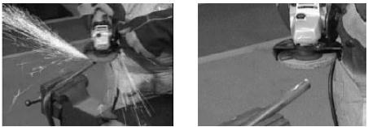

Bor Listrik Portabel (Portable Electric Drill)
Gambar. Portable Electric Drill
Bor listrik portable atau disebut juga bor tangan memiliki spesifikasi berdasarkan ukuran chuck, ukuran motor (hp), dan kecepatan (rpm). Portable drill umumnya berbentuk pistol besar, dengan drill cover terbuat dari plastik atau logam.
Chuck berada pada ujung drill. Chuck membuka dan menutup sesuai dengan ukuran mata bor (drill bit) yang berbeda. Untuk mengatur ukuran chuck, dan mengencangkan sebuah chuck key dimasukkan ke dalam lubang kecil pada chuck. Chuck key diputar searah jarum jam untuk menutup, berlawanan arah jarum jam untuk membuka. Terdapat lubang udara kecil untuk inlet dan outlet pada rumah bor (drill case) sehingga memungkinkan udara mengalir melalui motor. Di atasnya terdapat sebuah plat serial number dengan informasi tingkat kecepatan (rpm). Tombol (trigger) terdapat pada handle yang mengendalikan operasi bor. Tombol trigger lock terdapat di permukaan bawah handle atau di dekat trigger. Tool ini dibuat cukup ringan untuk dipegang dengan satu tangan dan mudah untuk dioperasikan.
Penggunaan utama adalah untuk membuat lubang. Bor dapat digunakan digunakan untuk reamer, mengamplas atau mengkilapkan permukaan. Jenis material yang akan dibor menentukan jenis mata bor (drill bit). Beberapa perlengkapan dan assesoris memungkinkan drill digunakan untuk banyak tujuan lainnya.
Drill yang baik memiliki Putaran balik (reverse variable speed). Kecepatan variable membuat operator dapat memperlambat kecepatan drill untuk memasukkan screw. Tombol trigger lock menahan trigger dalam posisi “on” ketika drill digunakan untuk mengamplas, mengkilapkan atau membersihkan bagian yang kasar agar menjadi halus.
Drill akan memberikan hasil yang lebih baik apabila digunakan sesuai dengan kecepatan yang tepat. Pastikan untuk memegang drill dengan hati-hati sehingga tidak merusak drill bit atau perlengkapannya. Jagalah agar area kerja bersih. Jangan menggunakan tool dengan kemampuan kecil untuk melakukan pekerjaan yang seharusnya dilakukan oleh heavy duty tool.
Jagalah kebersihan drill dari kotoran dan oli. Periksa kabel listrik apakah ada yang terkelupas dan mengalami kerusakan lainnya. Pastikan bahwa semua bolt dan fitting terpasang dengan kuat. Periksa operasi trigger dengan melepaskan plug. Gunakan hanya chuck key untuk mengencangkan chuck.
Pada gambar di atas, drill bit menggunakan key chuck. Setelah mengencangkan drill bit di dalam chuck dengan key, lepaskan key chuck sebelum mulai mengebor. Jika tidak melepaskan key, maka key dapat terlempar dari chuck dan menyebabkan cidera.
Gambar.Air Drill
Bor angin (Air dril)l digunakan dalam lingkungan dimana electric drill tidak aman untuk digunakan. Misalnya, percikan api dapat menyalakan cairan yang mudah terbakar. Karena air drill bergantung pada udara bertekanan maka drill ini tidak sekuat electric drill walaupun berputar secepat electric drill.
Menggunakan Bor Angin (Air Drill)
Besarnya torsi yang dihasilkan air drill ditentukan oleh tekanan sistem udara yang mengalirkannya. Air drill lebih kecil dan berputar dengan kecepatan yang lebih tinggi daripada electric drill. Kekuatannya sebanding dengan battery powered drill. Tidak seperti battery power drill atau electric drill, air drill tidak memerlukan listrik untuk mengoperasikannya. Kedua jenis drill ini lebih aman saat digunakan dalam lingkungan dimana terdapat material yang mudah terbakar
Air tool dipasang pada air supply melalui fitting yang dapat dihubungkan dan dilepaskan dengan mudah. Lama-lama sambungan ini menjadi aus dan menimbulkan kebocoran udara. Apabila kebocoran udara berlebihan, output dari air tool akan berkurang.
Air tool memerlukan pelumasan. Kebanyakan workshop memiliki tool automatic oiler yang digabungkan dengan sistem air supply. Apabila workshop tidak memiliki automatic oiler, maka air tool harus dilumasi setiap hari. Berikan beberapa tetes oli pada inlet dari air tool sebelum digunakan.
Gambar . Safety Equipment
Pastikan memakai safety equipment yang benar sebelum mulai bekerja. Kaca mata pelindung (goggle) dan ear protector biasanya sudah mencukupi. Jika menggunakan sikat baja (wire brush) untuk membuang karbon, karat atau gasket yang rusak, harus mengenakan full face protection untuk melindungi diri dari partikel yang terlempar.
Gambar.Full Face Protection
Gambar.Drill Bit
Mata bor (Drill bit) yang berada di bagian ujung, digunakan untuk memotong dan bit shank ditahan oleh jaw pada drill chuck. Umumnya digunakan pada logam untuk membuat lubang berbentuk cylinder. Drill bit jenis ini memiliki ujung tajam dan dua sisi yang digunakan untuk memotong. Bagian pinggir yang berbentuk spiral mengangkat serpihan logam dari lubang saat drill bit berputar.
Diameter shank sama besarnya dengan diameter tepian spiral. Drill bit yang bukan merupakan twist drill bit adalah yang diameter sisi potongnya lebih besar dibandingkan diameter bit shank, tidak dianjurkan untuk logam. Diameter drill bit yang paling umum digunakan pada kebanyakan portable drill adalah berkisar antara 1,6 mm hingga 13 mm. Angka pada drill bit juga umum digunakan untuk mengenali ukuran dari drill bit.
Fungsi dari drill bit ini adalah untuk membuat lubang bulat dalam material, yang kerasnya bisa sama dengan mata bor. Penggunaan mata bor khusus untuk membuat lubang. Mata bor tidak boleh digunakan sebagai chisel, tapper atau prier. Mata bor yang terbuat dari baja karbon digunakan untuk kayu dan logam lunak. Mata bor HSS digunakan pada logam lunak dan baja lunak. Mata bor dengan ujung carbide atau tungsten carbide digunakan untuk memotong beton dan logam-logam keras.
Selama penggunaan, gunakan cairan pendingin untuk mencegah kerusakan mata bor akibat panas. Cairan yang umum digunakan sebagai pendingin adalah oli dan air. Celupkan mata bor ke cairan pendingin ketika melakukan pengeboran logam. Gunakan mata bor dengan sangat hati-hati untuk mencegah kerusakan dan menghindari cidera pada operator. Jangan menggunakan mata bor sebagai chisel. Hal ini akan menyebabkan ujung mata bor patah. Pastikan bahwa bit shank tidak memiliki bagian pinggir yang kasar yang akan menyebabkan tool rusak. Kebanyakan penyebab kegagalan pengeboran adalah kerusakan pada shank bit.
Gambar.Ukuran Drill
Metode-metode berikut digunakan untuk menentukan ukuran drill. Berdasarkan diameter dalam satuan milimeter, yang berkisar dari 0,32 mm ke atas. Ukuran drill dalam satuan metrik meningkat dalam kisaran 0,2 mm. Satuan metrik sekarang merupakan kisaran drill yang paling umum digunakan.
Jaga kebersihan mata bor dari kotoran dan oli. Simpan mata bor di tempat yang kering untuk mencegah karat. Ketika mengasah mata bor, celupkan bagian ujung mata bor ke dalam air beberapa kali, jika tidak, bagian ujung akan menjadi lunak dan kehilangan kemampuan potongnya. Pastikan untuk mengikuti petunjuk dari pabrik pembuat saat melakukan pengasahan
Gambar.Portable Power Grinder
Portable power grinder tersedia dalam berbagai bentuk dan ukuran. Ada lightweight grinder, cone wheel grinder, horizontal grinder dan surface grinder. Bagian-bagian portable power grinder adalah:
Body grinder dapat terbuat dari logam atau plastik. Ukuran gerinda diklasifikasikan berdasarkan kecepatan (rpm) dan ukuran grinding wheel yang digunakan. Portable power grinder digunakan untuk menggerinda hasil pengelasan, menghaluskan permukaan dan membersihkan karat. Portable power grinder digunakan di tempat yang tidak memungkinkan untuk mencekam benda kerja di pedestal grinder. Portable power grinder dipegang dengan tangan dan dioperasikan di atas bidang yang dikerjakan.
Apabila portable power grinder digunakan untuk menghaluskan suatu permukaan, kualitas hasilnya tidak akan sama dengan hasil dari gerinda yang menggunakan mesin Gunakan hanya portable power grinder di tempat dimana permukaan akhir tidak terlalu penting. Periksalah grinding wheel apakah ada yang pecah atau retak sebelum digunakan. Apabila ada yang pecah atau retak, pasanglah grinding wheel baru. Selalu gunakan safety glass saat menggunakan portable power grinder.
Pastikan kecepatan maksimum spindle tidak melebihi kecepatan yang telah ditentukan. Cabut kabel listrik jika tidak digunakan. Apabila wheel guard telah dibuat untuk gerinda, pastikan pelindung ini digunakan. Ketika menggunakan gerinda, dekatkan gerinda secara perlahan dengan benda kerja. Jangan menggerinda di sekitar gas yang mudah terbakar, di sekitar campuran atau material yang mudah terbakar. Jangan terlalu menekan gerinda, jika terlalu banyak penekanan akan memperlambat motor dan menyebabkan benda kerja menjadi panas, dapat menyebabkan distorsi terhadap logam. Jangan menghidupkan gerinda dengan spindle terkunci atau dalam keadaan dibebani. Hal ini dapat menyebabkan motor terbakar
Gambar. bagian-bagian Portable Power Grinder
Jaga kebersihan portable power grinder dari kotoran dan oli. Jangan membiarkan kotoran masuk ke dalam ventilasi udara. Periksa kabel listrik apakah ada yang terkelupas dan kerusakan lainnya. Pastikan semua bolt, fitting kencang dan jagalah gerinda tetap dalam kondisi yang baik. Periksa mechanical operation dari control lever dengan melepaskan plug. Pelumasan yang baik akan memberikan daya pakai yang lama. Gerinda yang digunakan pada pekerjaan berat harus diinspeksi dan dilumasi.
Gambar. Abrasive disc
Gambar.Cara menggunakan gerinda
Gambar 2.17. Portable Impact Wrench
Portable impact wrench digunakan untuk memengendorkan baut/mur dengan sangat cepat, sedangkan yang berukuran besar digunakan juga untuk mengendorkan baut/mur yang sangat kencang.
Portable impact wrench tersedia dalam berbagai bentuk dan ukuran untuk penggunaan yang berbeda. Dua jenis utama adalah pistol dan tuas. Jenis pistol mirip seperti portable electric drill yang memiliki tuas kontrol yang sama untuk power supply. Jenis tuas tidak memiliki handle terpisah dan tool dipegang di sekeliling penutup motor atau unit penggerak. Jenis tuas mengoperasikan kecepatan alat dan mengubah arah rotasi. Square drive unit beroperasi seperti socket wrench.
Spline drive unit memungkinkan socket masuk. Penggantian chuck yang cepat memberikan berbagai macam output. Impact wrench diklasifikasikan berdasarkan jumlah tegangan yang diperoleh dalam waktu 5 detik, ukuran drive, kecepatan (rpm), ukuran bolt dan jenis daya (listrik atau udara). Beberapa impact wrench memiliki perlengkapan yang dapat mengatur torque agar sesuai dengan fastener yang diputar.
Portable impact wrench cukup ringan dan mudah dioperasikan. Keuntungan utama dari impact wrench dibandingkan wrench standar adalah kecepatan untuk melonggarkan atau mengencangkan bolt dan nut. Operator juga tidak akan mendapatkan torque yang cukup dari hand tools yang lebih kecil dan akanmembutuhkan impact wrench. Impact wrench digunakan untuk kebutuhan industri. Impact wrench listrik digunakan untuk pekerjaan yang lebih kecil karena electric impact wrench memberikan torque yang lebih rendah daripada air impact wrench dengan ukuran yang sama. Air impact wrench digunakan di hampir semua kebutuhan industri. Electric impact wrench dan air impact wrench digunakan di workshop. Impact socket adalah satu-satunya socket yang digunakan dalam impact wrench. Cara mengetahui perbedaan antara impact socket dan standard socket adalah impact socket berwarna hitam.
Kisaran tension pada impact wrench adalah 2.250 hingga 33.760kg. Jangan mengoperasikan tool listrik tanpa terhubung dengan ground. Gunakan safety glass ketika menggunakan impact wrench. Lepaskan alat tersebut saat tidak digunakan. Gunakan hanya socket yang sesuai dengan impact ketika menggunakan impact wrench.
Pastikan memegang wrench dengan kuat sehingga socket tidak akan terlepas dari bolt atau nut. Jangan menggunakan impact wrench tanpa pembebanan. Impact wrench akan mengalami keausan lebih cepat jika tidak memiliki beban saat dioperasikan. Pastikan menggunakan ukuran impact wrench yang benar dan socket yang sesuai dengan bolt dan nut. Pastikan bidang yang dikerjakan dipasang dengan kuat sehingga tidak akan bergerak.
Jaga kebersihan impact wrench dari kotoran dan oli. Jangan membiarkan kotoran masuk ke dalam sistem ventilasi udara. Pastikan penutup logam atau plastik berada dalam kondisi yang baik. Periksa kabel listrik apakah ada yang terkelupas atau kerusakan lainnya. Periksa operasi mekanis control lever dari power supply dengan plug dilepaskan. Pelumasan yang baik terhadap impact wrench akan meningkatkan usia pakai wrench. Kebanyakan impact wrench memiliki internal oli reservoir yang harus diperiksa setiap kali melakukan pekerjaan yang berat.
Gambar 2.18. Menggunakan Impact Wrench
Gunakan impact wrench/rattle gun untuk melonggarkan dan melepaskan lug nut pada wheel. Tenaga dan getaran akan melonggarkan nut yang kencang karena torque yang dihasilkan oleh wrench.